Image Gallery: National Parks
Plants and animals found at Yellowstone
Denali National Park and
Into the Wild
Joshua Tree National Park fun facts
Please take a look and enjoy some beautiful national park images!
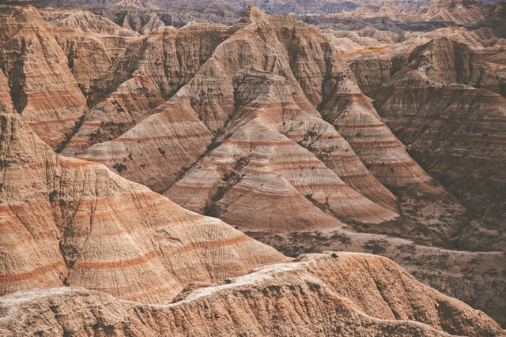
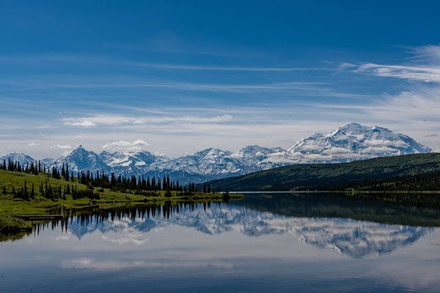
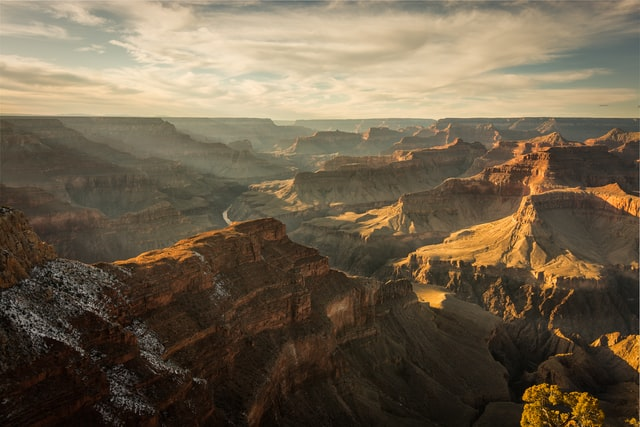
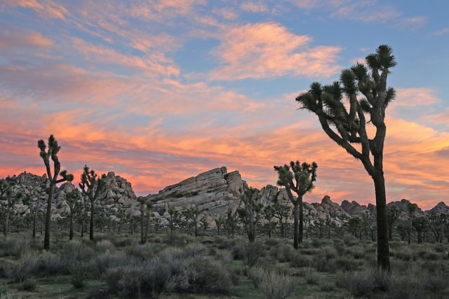
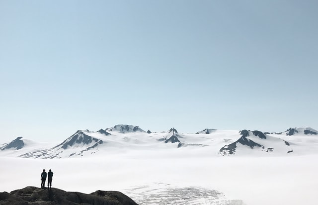
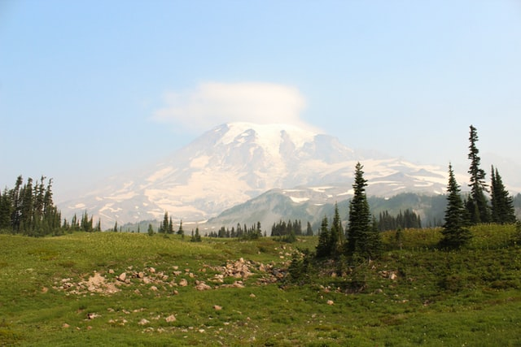
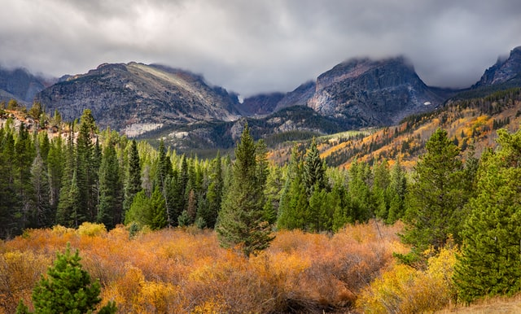
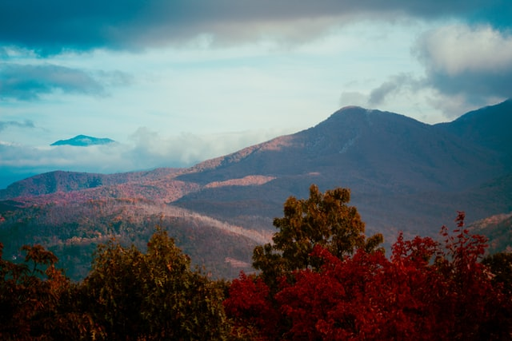
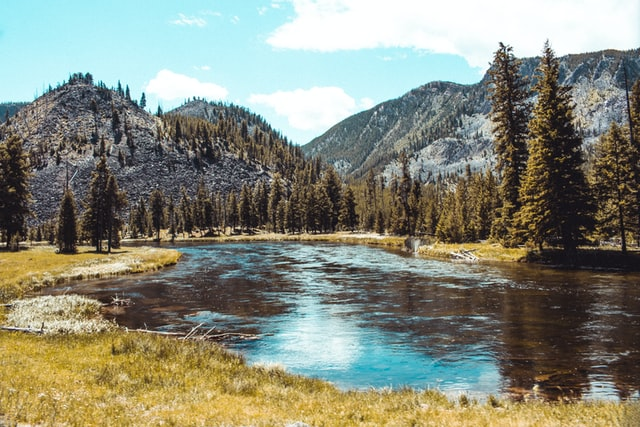
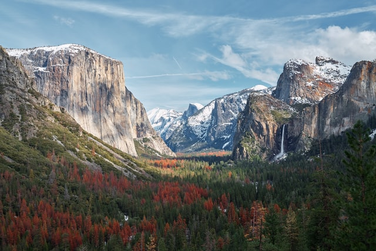
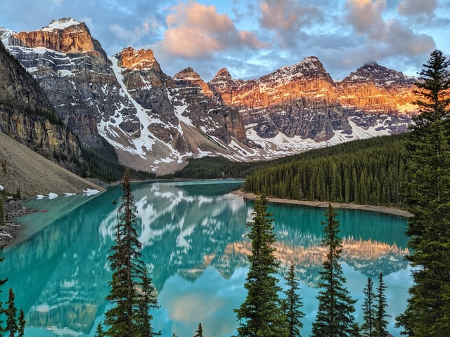
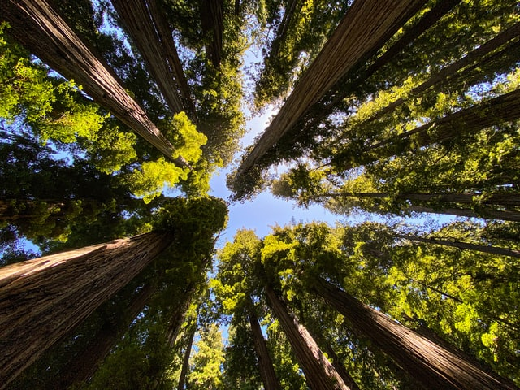